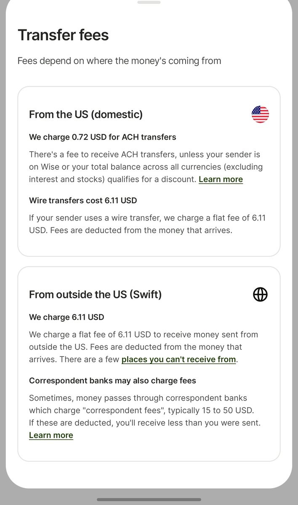

关于 Wise 账户设置的再补充：
Stripe 不管是本体还是 Express，在大多数情况下只允许用接受当地法定货币的银行账户接受资金
也就是说，不能使用 EEA 和英国的账户接收美元，尽管它是 Wise
因为如果你要用 USD 账户收钱，你需要将 Stripe Express 的区域设置在美国，而如果设置在美国，除了需要 SSN 或者 ITIN，税费预先扣除 30％ 外，还需要支付一定的 ACH 费用导致最终到账金额减少
还是那句话，如果你选择使用 Wise 接受推特的收益分成，一定要用英国或者 EEA 的账户：如果你不想给 Wise 白白送钱的话
Stripe 不管是本体还是 Express，在大多数情况下只允许用接受当地法定货币的银行账户接受资金
也就是说，不能使用 EEA 和英国的账户接收美元，尽管它是 Wise
因为如果你要用 USD 账户收钱，你需要将 Stripe Express 的区域设置在美国，而如果设置在美国，除了需要 SSN 或者 ITIN，税费预先扣除 30％ 外，还需要支付一定的 ACH 费用导致最终到账金额减少
还是那句话，如果你选择使用 Wise 接受推特的收益分成，一定要用英国或者 EEA 的账户：如果你不想给 Wise 白白送钱的话
